Tema 5- Procesamiento de imagen: Segmentación¶
En este tema veremos cómo segmentar imágenes, detectando los píxeles pertenecientes a los objetos de interés.
Umbralización¶
Como puede verse en este enlace, OpenCV proporciona muchos métodos para realizar umbralización básica mediante la función threshold.
La umbralización de Otsu también se puede implementar mediante esta misma función, indicando como parámetro el flag CV_THRES_OTSU:
1 | threshold(src, dst, 0, 255, CV_THRESH_BINARY | CV_THRESH_OTSU); |
La umbralización adaptativa se implementa usando la función adaptiveThreshold.
El método de Chow-Kaneko no está en OpenCV, aunque en realidad se puede implementar de forma sencilla.
Tal como hemos visto en teoría, podemos usar un algoritmo de detección de bordes para poder estimar posteriormente los contornos de los objetos (y de esta forma segmentarlos). En OpenCV existe una función para realizar esta tarea llamada findContours que sólo puede usarse para extraer contornos a partir de los bordes detectados con otro algoritmo (es decir, trabaja con una imagen binaria como entrada). En este enlace puedes ver un ejemplo de un programa que usa findContours y también la función drawContours para dibujar el resultado usando colores aleatorios.
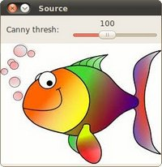
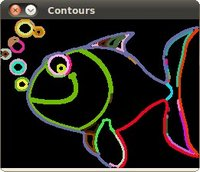
Crecimiento y división de regiones¶
OpenCV no tiene ningún método de crecimiento de regiones, aunque existen algunos ejemplos de código que lo implementan siguiendo la metodología que hemos visto en clase. Tampoco existen métodos de división y unión, pero en este enlace puedes consultar un ejemplo sencillo (en python).
Watershed¶
En OpenCV tenemos el algoritmo Watershed. Puedes ver ejemplos de uso de un programa interactivo y también no interactivo, es decir, deduciendo de forma automática los marcadores iniciales.
En el ejemplo no interactivo se segmenta la siguiente imagen:
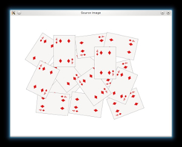
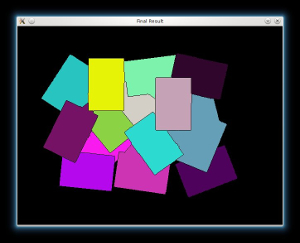
Clustering¶
El algoritmo Mean-shift se implementa medianta la función pyrMeanShiftFiltering, cuya ayuda puedes consultar aquí. Aquí puedes ver un ejemplo de código que usa este algoritmo:
1 2 3 4 5 6 7 8 9 10 11 12 13 14 15 16 17 | #include <opencv2/opencv.hpp> // Incluimos OpenCV #include <iostream> using namespace cv; using namespace std; int main(int argc, char* argv[]) { Mat src = imread(argv[1]); Mat dst; TermCriteria t(TermCriteria::MAX_ITER, 100, 1); pyrMeanShiftFiltering(src, dst, 25, 60, 1, t); imwrite("pills2.png", dst); waitKey(0); } |
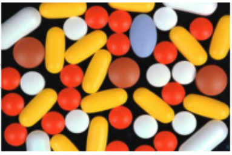
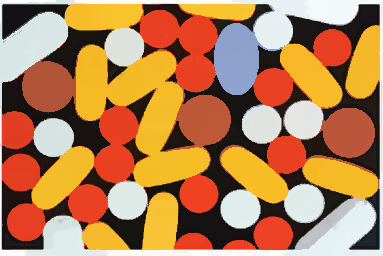
El algoritmo k-means se implementa en OpenCV mediante la función kmeans. En este enlace puedes ver un ejemplo de uso. A nivel práctico, la principal diferencia con Mean-shift es que con k-means debemos indicar el número de clusters K, mientras que con mean-shift no podemos indicar la cantidad de elementos distintos que queremos encontrar.
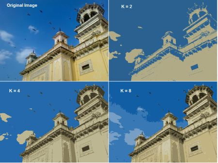
En este enlace puedes encontrar un ejemplo completo de código que usa k-means.
Métodos basados en grafos¶
El método basado en grafos más común en OpenCV es GrabCut. Puedes ver un ejemplo de esta función usada de forma interactiva en este enlace.
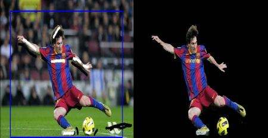
Métodos de saliency¶
OpenCV implementa algunos algoritmos de saliency, entre los que se encuentra Spectral Residual. Veamos un ejemplo de código:
1 2 3 4 5 6 7 8 9 10 11 12 13 14 15 16 17 18 19 20 21 22 23 24 25 26 27 28 29 30 31 32 33 34 35 36 | #include <opencv2/opencv.hpp> #include <opencv2/saliency.hpp> #include <iostream> using namespace std; using namespace cv; using namespace saliency; int main( int argc, char* argv[]) { if (argc!=2) { cerr << "Syntax: " << argv[0] << " <image>" << endl; return -1; } Mat image = imread(argv[1]); Mat binaryMap; Mat saliencyMap; //Inicializamos el algoritmo de saliency StaticSaliencySpectralResidual saliencyAlgorithm; // Calculamos "saliency map" if (saliencyAlgorithm.computeSaliency(image, saliencyMap)) { // Calculamos "binary map" StaticSaliencySpectralResidual spec; spec.computeBinaryMap(saliencyMap, binaryMap); // Mostramos el resultado imshow("Saliency Map", saliencyMap); imshow("Original Image", image); imshow("Binary Map", binaryMap); waitKey( 0 ); } } |
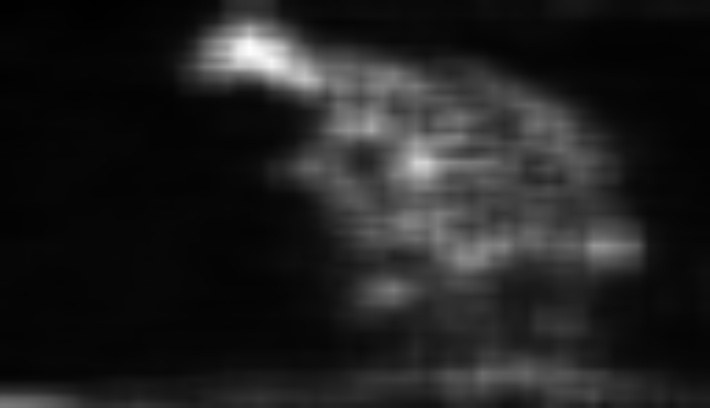
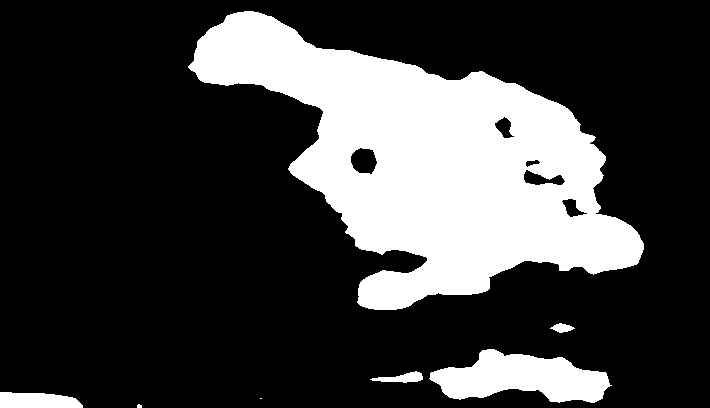
La mayoría de métodos recienten que estiman una función saliency suelen ser bastante más complejos y se basan en técnicas de aprendizaje automático. Si quieres ver un ejemplo de otro método puedes mirar el algoritmo GMR, que está basado en grafos (no usa aprendizaje automático).
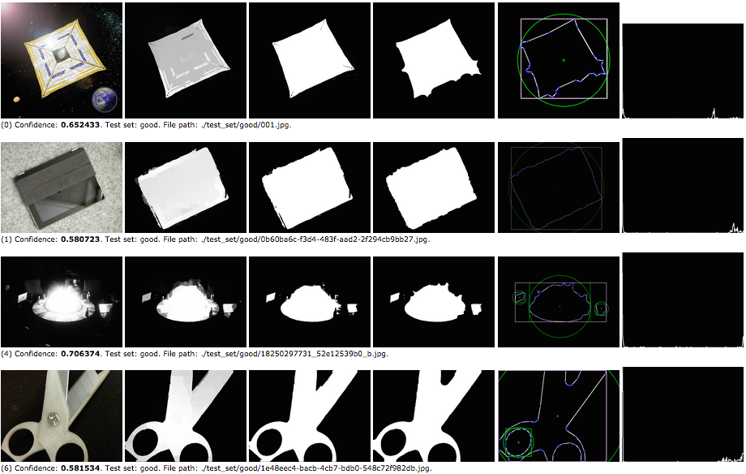
Ejercicio¶
Dada la imagen de una retina, se pide hacer un programa que segmente lo mejor posible los vasos sanguíneos. Se trata de detectar si un píxel pertenece al fondo de ojo o a un vaso, por lo que es un problema de umbralización binaria. Llamaremos a este ejercicio retinaSegment.cpp, y el programa debe recibir tres parámetros:
1 | Syntax: ./retinaSegment <image> <mask> <output> |
imagees la imagen de entrada, una foto de la retina en color.maskes otra imagen de entrada que indica la máscara, es decir, qué parte de la imagen inicial hay que procesar. Para borrar aquellos elementos de una imagen que no estén dentro de la máscara puedes usar el operador&, por ejemploMat masked = image & mask;outputes el nombre del fichero en el que vamos a guardar el resultado de la segmentación.
Se proporcionan los datos de las retinas y las imágenes correctamente segmentadas para evaluar el resultado. También está disponible el sistema de evaluación.
Descarga todos los materiales de este ejercicio que se encuentran en el fichero ejercicioRetinas.zip. En la carpeta retinas tenemos las imágenes a procesar. Estas imágenes son un subconjunto sacado de la base de datos DRIVE. Cuando descomprimas este archivo, podrás ver en el directorio retinas lo siguiente:
images: imágenes de entrada que debe segmentar tu algoritmo.mask: máscaras de las imágenes originales.output: directorio vacío (de momento).2nd_manual: imágenes correctamente etiquetadas para evaluar los resultados del programa.
En el directorio principal que se descomprime también hay un programa iou.cpp. Compílalo con OpenCV, generando el ejecutable iou. Este programa calcula la intersección sobre la unión de dos imágenes (en palabras simples, devuelve cuánto se parece una imagen obtenida y una segmentada correctamente). Este programa lo usa el script evaluate.sh que calcula el porcentaje de acierto de vuestro programa.
En el directorio ejercicioRetinas debes implementar el programa retinaSegment.cpp, compilarlo, y evaluarlo ejecutando desde el terminal:
1 | ./evaluate.sh |
Para resolver este ejercicio puedes usar cualquier algoritmo de los que hemos visto en la asignatura.